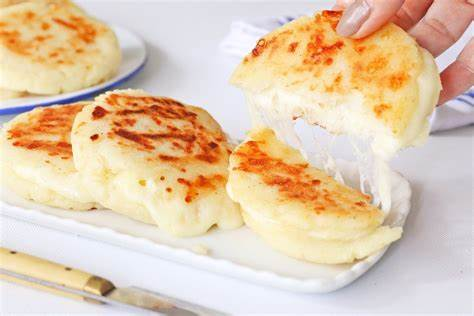

Arepas de queso
Ingredientes:
- Harina de maíz (2 tazas)
- Queso rallado (1 taza)
- Mantequilla (2 cucharadas)
- Sal (al gusto)
- Agua tibia (1 taza)
Preparación:
Mezcla la harina de maíz con queso, mantequilla, sal y agua. Forma las arepas y cocina en una sartén hasta dorar.